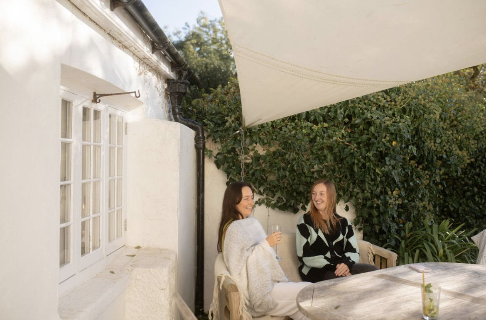
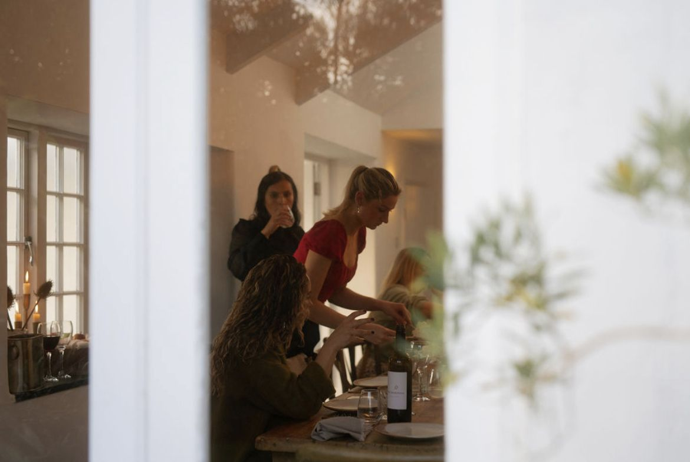
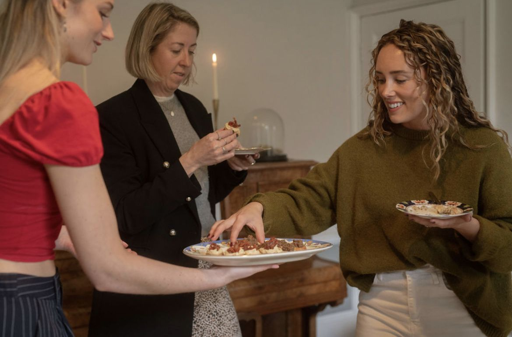

Cornwall & beyond
Your story, expertly woven
Calm, personal wedding planning for couples who want to be fully present on their day.
Begin your enquiryThe WOVEN way
Moments matter most when you're fully present in them
A wedding shouldn't be something you perform or manage. Before I plan anything, I get to know you properly: your story, your families, the day you imagine and the life you hope to build after it. Your day is shaped by that, not by templates or trends. Then I carry every detail, so you can let go and simply be in it.

Meet Zoë
From the kitchen to the heart of the day
I started at a wedding venue in 2019 as a kitchen assistant and never left. I was fascinated by how weddings bring people together: friends, family and strangers becoming a community for one day.
Moving front of house taught me to read people, their needs, their worries, what would make them feel held. I studied events management, coordinated weddings through my summers, then moved into retreats. The pattern never changed: I'm drawn to the intimate, personal side of a celebration.
I'm chaotic and creative in my own life and methodically organised in my work. That's what lets me see your whole vision and carry every thread of it through.
- Leiths Certificate in Food and Wine
- WSET Level 2 Award in Wines
- In weddings since 2019
How I can help
Services
From a single conversation to walking beside you from the very start

The Sounding Board
£65 · one hour
An hour together on whatever is on your mind, from a decision you're stuck on to a second pair of eyes on your plans.

The Finishing Touch
from £450 + travel
You've chosen the details. I set them out with care, so every space feels like you before your guests walk in.

Sewn
from £1,250 + travel
We begin with your story. From six weeks before, I become your point person, then hold the whole day so you can simply be in it.

Woven Together
from £3,500 + travel
Someone in your corner from the moment you book: your story, planning, suppliers, budget and design, then the day itself.
You've spent months imagining your day. You deserve to be in it, not running it.

Our philosophy
Not by perfection, but by presence.
Read more


Good to know
Questions
How far ahead should we book?
As soon as you have a date and venue. I take on a small number of couples each season so everyone gets my full attention, and popular summer dates go first. For Sewn, I join you six weeks before. For Woven Together, the earlier the better.
Do you travel outside Cornwall?
Yes. I'm based in Cornwall and happy to travel. Travel is added to your quote depending on where your celebration is.
Which service is right for us?
If you've planned everything and want to hand it over, Sewn is made for you. If you'd like someone alongside you from the start, Woven Together is the one. Not sure? That's exactly what our first call is for.
How do we book?
We start with a free 30 minute call to hear your plans. I'll send a tailored proposal and quote within three to five days, and a signed agreement with a 25% deposit secures your date. The balance is due one month before your wedding. You can read my full terms at any time.
or write to me at zoe@wovencornwall.com